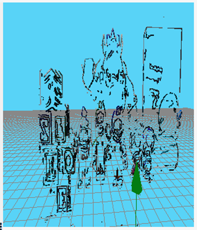

While visualizing the images captured by the cameras, I noticed (as mentioned before) that they are significantly dark. This directly affects the quality of edge detection, since many relevant details are lost when applying the Canny detector. To improve the edge detection, I introduced the following changes:
As a result, the detection of interest points has significantly improved. The images below illustrate this improvement: first comparing the original image (left) with the gamma-corrected one (right), followed by edge detection comparisons: original detection (left), after gamma correction (center), and with final threshold adjustment (right).
I had been considering for some time that it would make more sense if the main while loop only contained
the main function call, and that the interest points were processed entirely within that single iteration.
To implement this, I adjusted the function responsible for retrieving the interest points. I removed the limited random selection and instead returned all points that belong to the detected edges. This leads to a more complete and accurate reconstruction of the environment.
